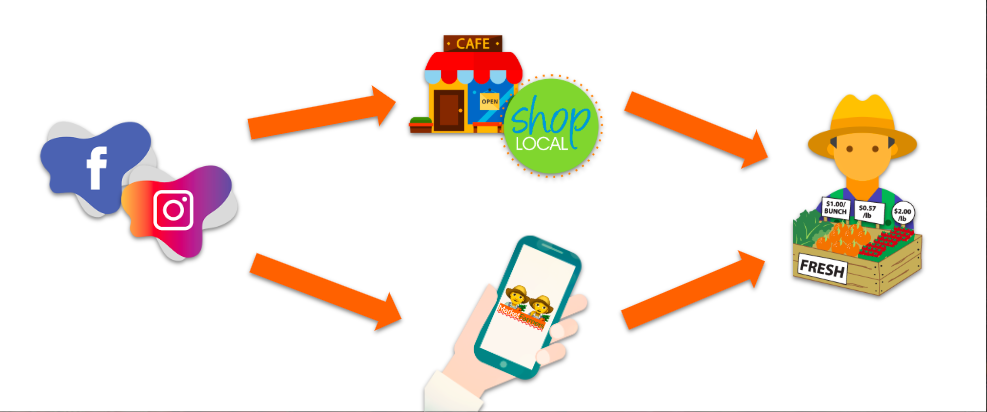

Our Problem
Farmers of a local county are creating and utilizing market stands as a way of reaching the public and selling produce. It has become increasingly difficult to let customers know where and when they will be set up and be open for business. It isn't easy for farmers to communicate with customers, so we have to find a way to help.
Our Solution
In order to promote the goods and services offered at local farmers’ markets, and to facilitate interaction between the farmers and their customers, we are proposing a multi-faceted solution centered around a mobile application. This app would offer a variety of features for both farmers and customers that would result in greater information flow and customer engagement. Users can share locations, photos, etc., to create an interconnected community. Farmers can promote their goods and consumers can find where their stand will be. This solves the problem of not knowing where certain farmers will be. Users can also favorite farmers so they will always know where the stand will be. To promote the use of the application, and to bring awareness to local producers, we are also proposing a social media-based ad campaign as a complementary solution. This type of marketing has gained popularity in recent years for a variety of reasons. One of the most obvious advantages to using Facebook advertisements is their ability to invite interaction from users. An advertisement on Facebook is not just displayed on a webpage, rather, it can be “liked,” shared, and commented on by its audience. Social media is a massive market for advertising, which will help promote our app and farmers market in general.
The Target Market
Our target market is comprised of consumers who do and do not attend farmers markets. With the app, it will simply streamline the process of going to the market. Our social media advertising will help capture the people who maybe want to attend a local market, but don't know where to start or how to navigate one. People will be able to find exactly what they need and where they can get it using our app.
How It Works
Social media advertising puts our app out there to consumers interested in attending local farmers markets, as well as local businesses. The app itself connects farmers and consumers, allowing for everyone to have greater freedom of trade and satistfaction from the connective nature of our app.
Will People Want It
Of everyone surveyed, we had an overwhelming percentage of people who are very likely or extremely likely to use the proposed app. In addition, there are many competitors with similar apps, so it is an idea that people will use. Our app provides convenience and ease of access to consumers, increases efficiency, and connects communities together. It is free to use, and simply makes farmers markets better.